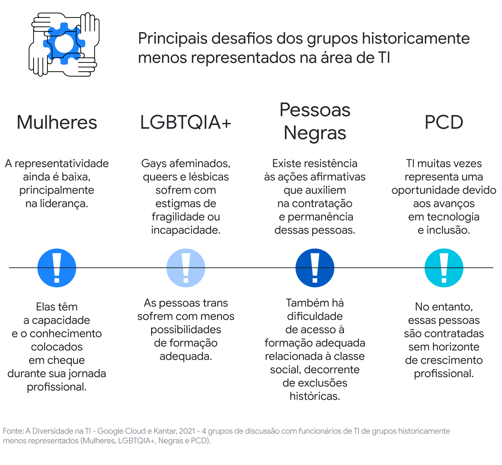
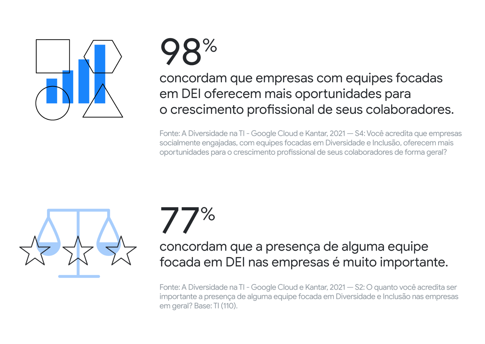
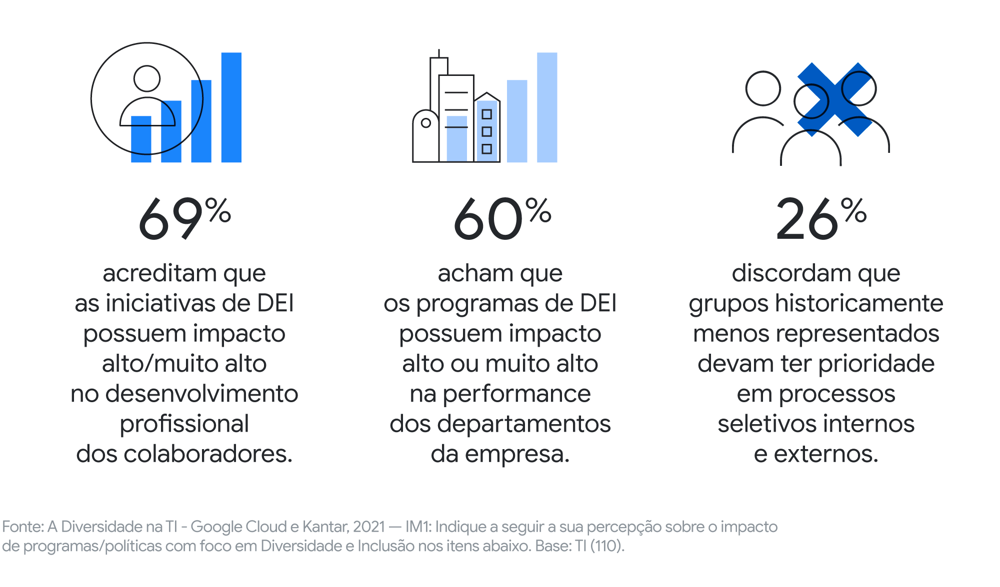

Diversidade e inclusão é um tema sobre as pessoas, suas vivências e individualidades que as fazem ser quem são e as tornam únicas. Assim, quando as empresas incentivam e aplicam esse tema, elas geram transformação em sua cultura organizacional. A diversidade corporativa simboliza a responsabilidade social da empresa em criar um ambiente de trabalho diverso e inclusivo, onde cada colaborador tem acesso às mesmas oportunidades, espaço e respeito.
Diversidade, equidade e inclusão são temas de crescente importância e uma pauta quente em muitas discussões no universo corporativo. Os números mostram que os profissionais brasileiros entendem o tema como fundamental para o seu dia a dia: 71% trocariam suas empresas por uma organização com equipes e ações focadas em DEI (sob as mesmas condições de salários e benefícios).
Os principais desafios: Em decorrência desse contexto histórico, um dos grandes desafios em torno da representatividade na TI são os vieses inconscientes sobre o feminino que impactam não só mulheres, mas também homens gays, por exemplo. Por ser uma área técnica, a questão de acesso à formação também desponta como um grande desafio.
As empresas da América Latina que adotam a diversidade tendem a superar outras empresas em práticas-chave de negócios como inovação e colaboração, e seus líderes são melhores em promover a confiança e o trabalho em equipe. Elas também costumam ter ambientes de trabalho mais felizes e uma melhor retenção de talentos. Tudo isso se traduz tanto em uma saúde organizacional mais sólida quanto em resultados: empresas que adotam a diversidade têm uma probabilidade significativamente maior de alcançar uma performance financeira superior à de seus pares que não o fazem. Essas conclusões são provinientes de um amplo estudo da McKinsey sobre o estado da diversidade corporativa na América Latina. Ainda de acordo com a pesquisa, empresas com diversidade étnica e racial têm 35% mais chances de ter rendimentos acima da média do seu setor e organizações com diversidade de gênero, têm 15% a mais de chances de ter rendimentos acima da média
Novos caminhos: Reconhecer os distanciamentos sociais que separam esses grupos é o primeiro passo rumo a transformação desse cenário. E colaboradores da área da TI parecem entender bem os impactos de um ambiente mais diverso e inclusivo no dia a dia, por mais que as discussões ainda estejam em evolução
E mais: as iniciativas em torno do tema também possuem sua importância reconhecida por esses profissionais, indicando clara vontade de mudar o panorama atual.
Em um ambiente empresarial no qual se respeita as diferenças, automaticamente haverá redução nos conflitos, maior engajamento dos colaboradores. Uma pesquisa da Harvard Business revela que os conflitos são reduzidos em até 50% em relação às organizações que não investem em diversidade.Com a melhor convivência dentro da empresa, acolhendo as diferenças, também fará com que os colaboradores se sintam mais seguros e acolhidos, podendo diminuir o turnover da organização.
Valorizando as diferenças, há melhorias no clima organizacional, os colaboradores ficam mais criativos e liberam seus potenciais. Ainda segundo a pesquisa da Harvard Business, empresas nas quais o ambiente de diversidade é reconhecido, os funcionários estão 17% mais engajados e dispostos a irem além das suas responsabilidades. Além disso, empresas que investem fortemente em uma equipe multidisciplinar, principalmente em um país onde há uma multiplicidade de raças, religiões, etnias etc. cumprem seu papel social. Tal investimento traz uma boa visibilidade na comunidade na qual a organização está inserida e incentiva outras empresas a fazerem o mesmo.
Times homogêneos produzem resultados homogêneos. Por outro lado, equipes diversificadas, construídas em torno de perspectivas, experiências e habilidades distintas, abrem espaço para a criatividade e a inovação.